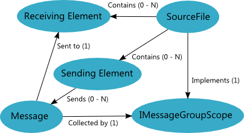

The Messaging System
The Diagram SDK messaging system provides the ability to report messages of varying severity on any object in the Diagram Object Model (DiOM). You can use these message reporting features to attach transitive information to a model that can be reported back to the end user in various ways. Most commonly, the messaging system is used to report compilation errors and warnings.
Messaging System Architecture
The following diagram illustrates the high-level architecture of the messaging system.

Messaging System Theory of Operation
The messaging system provides a framework for reporting, collecting, and querying Messages. The Element base class provides properties and methods MessageScope property that returns its IMessageGroupScope. The IMessageGroupScope walks the owner hierarchy aggregating messages. An element can query its MessageScope for its own messages as well as its descendants' massages. Thus, all Diagram SDK model types participate in the messaging system by default. You can can send messages to any element from anywhere in the Model or ViewModel layer. To display messages to the end user, you can create a ViewModel that pulls messages from the Msa changes and maintains a public collection of current messages in the Model layer. You then can create a view that binds to this collection to display messages to the end user.
Primary Types that Participate in the Messaging System
The following types form the backbone of the messaging system.
Message
A Message contains information about the state of an Element that may be of interest to the end user. Messages are most commonly used to report errors and warnings. The Message Constructor allows you to pass in several types of message information, including reporting type, severity, category, code, and formatting arguments.
IMessageGroupScope
IMessageGroupScope is an interface implemented by SourceFile to aggregate all the messages reported on Elements contained within the SourceFile.
Element
Messages are reported to specific model Elements. The Element base class includes properties and methods you can use to report and query messages on an Element.